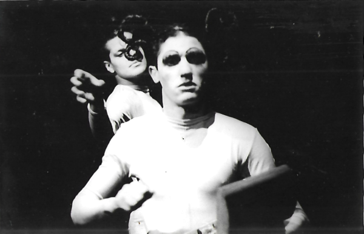
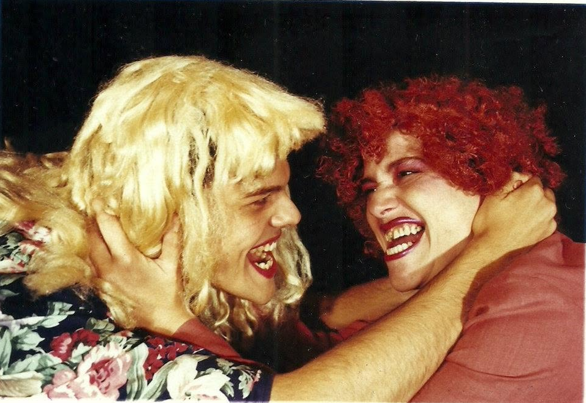

2001
As flores q a fala oculta(ator)
Direção: Vanessa Cançado. Teatro Barracão Encena, Curitiba.
Minha eterna namorada(ator)
Direção: Vanessa Cançado. Teatro Rodrigo de Oliveira, Curitiba.
O analfabeto político(ator)
Encerrou no Teatro Barracão Encena, Curitiba, e depois circulou pelo interior do Paraná e de Santa Catarina.
drag queen
Foi a primeira vez que fiz um papel feminino no teatro. Era um deboche com gênero e com o próprio teatro inclusive. Já apontava para o que viria a ser, anos depois, meu trabalho como drag queen e comediante.
O Analfabeto Político. Gustavo Bitencourt e Débora Celeste, 2001. Foto: Alessandra Haro.

As flores q a fala oculta. Curitiba, Teatro Barracão em Cena, 2001. Foto Vanessa Cançado.

04